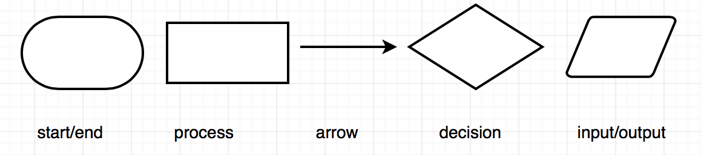
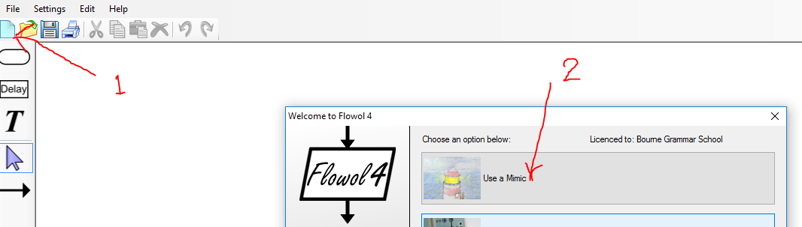

Flowing Flowcharts
Grey overlay
Pink
Green
Blue
Cream
Liliac
Purple
Yellow
1 Objectives
Developing Algorithms learning strand, specifically:
- develop problem solving skills by decomposition
- learn how to represent algorithms using flowchart
- Understand how abstraction can help solving complex problems
Developing Programming and Development learning strand, specifically:
- implement solutions using sequencing and repetition
- develop further understanding that programming bridges the gap between algorithmic solutions and computers
2 Sequencing
Learn It - Sequencing
- In the last lesson we looked at a program called Flowol that lets us use flowcharts to control and interact with situations called "mimics".
- Today we are going to use Flowol to create a sequence of instructions to solve certain problems.
- Computers follow instructions or sequences programmed into them. A flowchart can be used to help design a sequence. Actions can be ordered, reordered or removed if no longer necessary.
Task 1 - Traffic Lights
- Look at this video to see the sequence of lights on a traffic light.
- Copy this table by selecting it by clicking and dragging you mouse from the top left ot the bottom right.
- Paste it into a PowerPoint slide and complete the rest of the instructions, use the video above for help.
| Red light ON |
| DELAY for __ seconds |
| Red light ON and amber light ON |
3 Algorithms with Flowcharts
Revise It - flowcharts
- Remember that a flowchart is a type of diagram that represents an algorithm, workflow or process, showing the steps as boxes of various kinds, and their order by connecting them with arrows.
- Each shape represent some steps in the algorithm:

- The following is a simple example of using flowchart to describe the steps to a simple problem of determing if an user's input numbers are odd or not.
Try It
- Try your sequencing skills by turning your table of steps from the traffic lights into a flowchart in PowerPoint.
- Use the image below to start you off, then complete your flowchart.

Badge It - Silver
Learning Strand: Algorithms
- Finish your sequence for the problem by finishing all steps required to reach a solution.
- Create a flowchart in Powerpoint using appropriate symbols for your steps.
- Upload your flowchart to www.bournetolearn.com, Week 5 Silver for Problem Solving.
4 Using Flowol for Flowcharts
Learn It - Double Traffic Lights
- Launch the application Flowol 4, click on File->New and you should see something like the following:

- Select the
Bridge Lights mimicby clicking on it - Follow this video to make a flowchart that controls one set of lights.
- Your flowchart should look like this after following the video:

Badge It - Gold
Learning Strand: Algorithms
- You're halfway to the Gold badge, but at the moment only one set of lights work.
- See if you can work out how to make the second set of lights work with the first by showing a red light when the first shows green, amber at the same time and green when the first shows red.
- Your finished Gold badge work should make your lights look like this video, if they don't then try again.
- HINT: Click on one of your Output blocks, you can change both sets of lights using one block.
- If you get stuck, remember to ask your teacher for help.
Badge It - Platinum
Learning Strand: Algorithms
- Now you are familar with how
Flowolworks. - For your Platinum badge you need to download the PDF file at the link below:
Right click here then Save Link As to save the file to your Computer Science folder.
- Open the file in a program called Adobe Acrobat, right click the file in your Problem solving folder and select "Open With" then "Adobe Acrobat".
- Follow the instructions and complete the 3 flowcharts it instructs you to complete.
- Then screenshot your flowcharts and upload to the Platinum badge for Week 5.